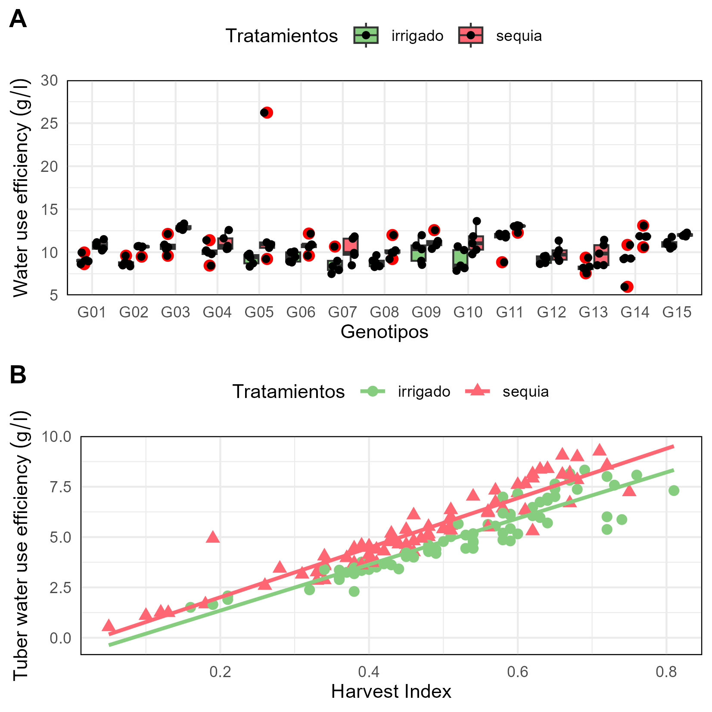

Import data
url <- paste0("https://docs.google.com/spreadsheets/d/"
, "15r7ZwcZZHbEgltlF6gSFvCTFA-CFzVBWwg3mFlRyKPs/edit#gid=172957346")
# browseURL(url)
fb <- url %>%
gsheet2tbl() %>%
rename_with(tolower) %>%
mutate(across(c(treat, geno, bloque), ~ as.factor(.))) %>%
mutate(across(where(is.factor), ~ gsub("[[:space:]]", "", .)) ) %>%
as.data.frame()
# str(fb)Plot raw data
Scatter plot
hi <- fb %>%
plot_raw(type = "scatterplot"
, x = "hi"
, y = "twue"
, group = "treat"
, xlab = "Harvest Index"
, ylab = "Tuber water use efficiency (g/l)"
, glab = "Tratamientos"
)Plot in grids
grid <- plot_grid(wue, hi
, nrow = 2
, labels = "AUTO")
save_plot("files/fig-01.png"
, plot = grid
, dpi= 300
, base_width = 10
, base_height = 10
, scale = 1.4
, units = "cm"
)
fig <- include_figure(
figure = "files/fig-01.png"
, caption = "Water use effiency in 15 potato genotypes"
, notes = "
A) Box plot.
B) Scatter plot
"
, label = "__Where:__"
)
fig$figure

Water use effiency in 15 potato genotypes Where: A) Box plot. B) Scatter plot
Plot summary data
Leaf area
#> Plot summary data
model <- fb %>%
yupana_analysis(response = "lfa"
, model_factors = "geno*treat"
, comparison = c("geno", "treat")
)
lfa <- model$meancomp %>%
plot_smr(type = "bar"
, x = "geno"
, y = "lfa"
, group = "treat"
, ylimits = c(0, 12000, 2000)
, sig = "sig"
, error = "ste"
, xlab = "Genotipos"
, ylab = "Area foliar (cm^2)"
, color = F
)
model$anova %>% anova()
## Analysis of Variance Table
##
## Response: lfa
## Df Sum Sq Mean Sq F value Pr(>F)
## geno 14 261742780 18695913 33.371 < 0.00000000000000022 ***
## treat 1 788562704 788562704 1407.541 < 0.00000000000000022 ***
## geno:treat 14 108153220 7725230 13.789 < 0.00000000000000022 ***
## Residuals 120 67228987 560242
## ---
## Signif. codes: 0 '***' 0.001 '**' 0.01 '*' 0.05 '.' 0.1 ' ' 1
model$meancomp %>% web_table()Tuber water use efficiency
model <- fb %>%
yupana_analysis(response = "twue"
, model_factors = "geno*treat"
, comparison = c("geno", "treat")
)
twue <- model$meancomp %>%
plot_smr(type = "line"
, x = "geno"
, y = "twue"
, group = "treat"
, ylimits = c(0, 10, 2)
, error = "ste"
, color = c("blue", "red")
,
) +
labs(x = "Genotipos"
, y = "Tuber water use effiency (g/l)"
)
model$anova %>% anova()
## Analysis of Variance Table
##
## Response: twue
## Df Sum Sq Mean Sq F value Pr(>F)
## geno 14 413.06 29.5046 35.2368 <0.0000000000000002 ***
## treat 1 2.04 2.0370 2.4328 0.1215
## geno:treat 14 16.07 1.1479 1.3710 0.1778
## Residuals 120 100.48 0.8373
## ---
## Signif. codes: 0 '***' 0.001 '**' 0.01 '*' 0.05 '.' 0.1 ' ' 1
model$meancomp %>% web_table()Plot in grids
grid <- plot_grid(lfa, twue
, nrow = 2
, labels = "AUTO")
ggsave2("files/fig-02.png"
, plot = grid
, dpi= 300
, width = 10
, height = 10
, scale = 1.5
, units = "cm")
fig <- include_figure(
figure = "files/fig-02.png"
, caption = "Water use effiency in 15 potato genotypes"
, notes = "
A) Bar plot
B) Line plot
"
, label = "__Where:__"
)
fig$figure
Water use effiency in 15 potato genotypes Where: A) Bar plot B) Line plot
Multivariate analysis
#> Principal component Analysis
mv <- fb %>%
yupana_mvr(last_factor = "bloque"
, summary_by = c("geno", "treat")
, groups = "treat"
)
# sink("files/pca.txt")
# # Results
# summary(pca, nbelements = Inf, nb.dec = 2)
# # Correlation de dimensions
# dimdesc(pca)
# sink()
ppi <- 300
png("files/plot_pca_var.png", width=7*ppi, height=7*ppi, res=ppi)
plot.PCA(mv$pca,
choix="var",
title="",
autoLab = "y",
cex = 0.8,
shadowtext = T)
graphics.off()
ppi <- 300
png("files/plot_pca_ind.png", width=7*ppi, height=7*ppi, res=ppi)
plot.PCA(mv$pca,
choix="ind",
habillage = 1,
title="",
autoLab = "y",
cex = 0.8,
shadowtext = T,
label = "ind",
legend = list(bty = "y", x = "topright"))
graphics.off()
# Hierarchical Clustering Analysis
clt <- mv$pca %>%
HCPC(., nb.clust=-1, graph = F)
# sink("files/clu.txt")
# clus$call$t$tree
# clus$desc.ind
# clus$desc.var
# sink()
ppi <- 300
png("files/plot_cluster_tree.png", width=7*ppi, height=7*ppi, res=ppi)
plot.HCPC(x = clt,
choice = "tree")
graphics.off()
ppi <- 300
png("files/plot_cluster_map.png", width=7*ppi, height=7*ppi, res=ppi)
plot.HCPC(x = clt, choice = "map")
graphics.off()
plot.01 <- readPNG("files/plot_pca_var.png") %>% grid::rasterGrob()
plot.02 <- readPNG("files/plot_pca_ind.png") %>% grid::rasterGrob()
plot.03 <- readPNG("files/plot_cluster_map.png") %>% grid::rasterGrob()
plot.04 <- readPNG("files/plot_cluster_tree.png") %>% grid::rasterGrob()
plot <- plot_grid(plot.01, plot.02, plot.03, plot.04
, nrow = 2
, labels = "AUTO")
ggsave2("files/fig-03.png"
, plot = plot
, dpi = 300
, width = 12
, height = 10
, scale = 1.5
, units = "cm")
fig <- include_figure(
caption = "Multivariate Analysis:
Principal component analysis and hierarchical clustering analysis."
, figure = "files/fig-03.png"
)
fig$figureMultivariate Analysis: Principal component analysis and hierarchical clustering analysis.